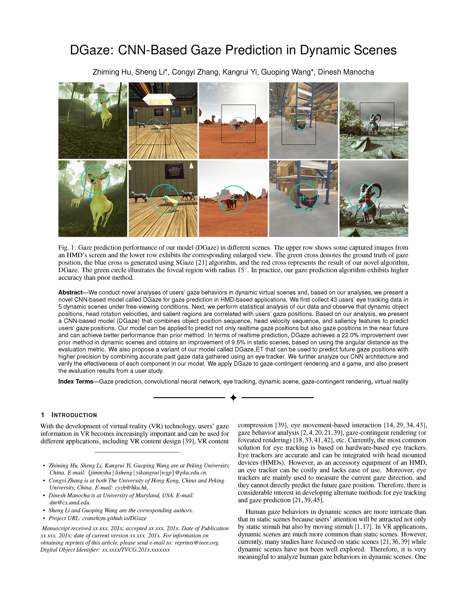
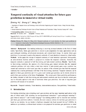
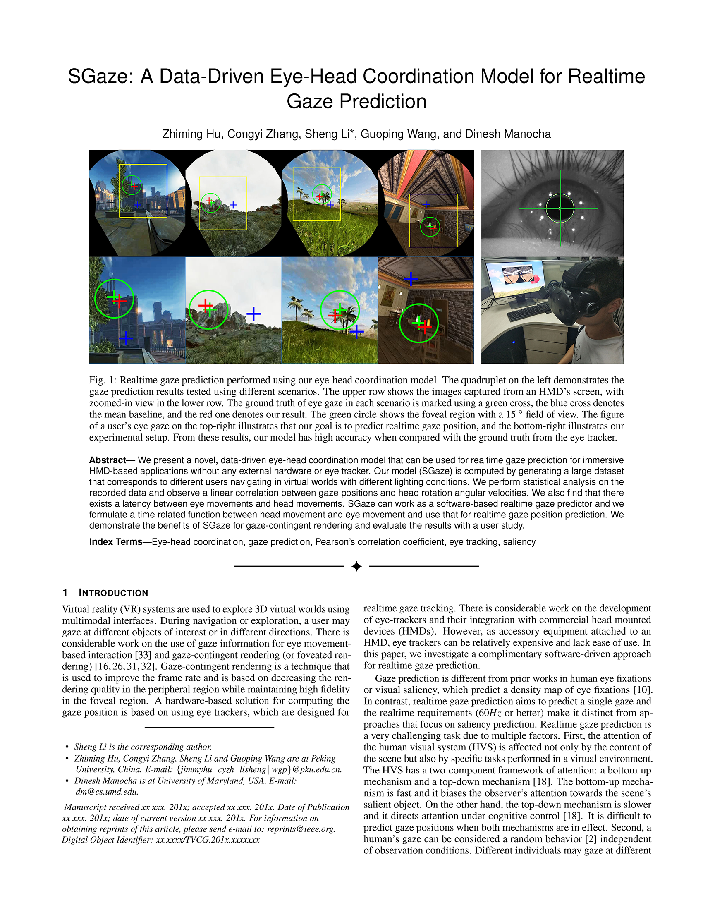

DGaze: CNN-Based Gaze Prediction in Dynamic Scenes
Zhiming Hu,
Sheng Li, Congyi Zhang, Kangrui Yi, Guoping Wang, Dinesh Manocha
IEEE Transactions on Visualization and Computer Graphics,
pp. 1902-1911,
2020.
Abstract
Links
BibTeX
Project
We conduct novel analyses of users' gaze behaviors in dynamic virtual scenes and, based on our analyses, we present a novel CNN-based model called DGaze for gaze prediction in HMD-based applications.
We first collect 43 users' eye tracking data in 5 dynamic scenes under free-viewing conditions.
Next, we perform statistical analysis of our data and observe that dynamic object positions, head rotation velocities, and salient regions are correlated with users' gaze positions.
Based on our analysis, we present a CNN-based model (DGaze) that combines object position sequence, head velocity sequence, and saliency features to predict users' gaze positions.
Our model can be applied to predict not only realtime gaze positions but also gaze positions in the near future and can achieve better performance than prior method.
In terms of realtime prediction, DGaze achieves a 22.0% improvement over prior method in dynamic scenes and obtains an improvement of 9.5% in static scenes, based on using the angular distance as the evaluation metric.
We also propose a variant of our model called DGaze_ET that can be used to predict future gaze positions with higher precision by combining accurate past gaze data gathered using an eye tracker.
We further analyze our CNN architecture and verify the effectiveness of each component in our model.
We apply DGaze to gaze-contingent rendering and a game, and also present the evaluation results from a user study.
@article{hu20_DGaze,
title = {DGaze: CNN-Based Gaze Prediction in Dynamic Scenes},
author = {Hu, Zhiming and Li, Sheng and Zhang, Congyi and Yi, Kangrui and Wang, Guoping and Manocha, Dinesh},
year = {2020},
journal = {IEEE Transactions on Visualization and Computer Graphics},
doi = {10.1109/TVCG.2020.2973473},
pages = {1902-1911}
}
-

Temporal continuity of visual attention for future gaze prediction in immersive virtual reality
Zhiming Hu,
Sheng Li, Meng Gai
Virtual Reality & Intelligent Hardware,
pp. 142-152,
2020.
Abstract
Links
BibTeX
Project
Background Eye tracking technology is receiving increased attention in the field of virtual reality.
Specifically, future gaze prediction is crucial in pre-computation for many applications such as gaze-contingent rendering, advertisement placement, and content-based design.
To explore future gaze prediction, it is necessary to analyze the temporal continuity of visual attention in immersive virtual reality.
Methods In this paper, the concept of temporal continuity of visual attention is presented.
Subsequently, an autocorrelation function method is proposed to evaluate the temporal continuity.
Thereafter, the temporal continuity is analyzed in both free-viewing and task-oriented conditions.
Results Specifically, in free-viewing conditions, the analysis of a free-viewing gaze dataset indicates that the temporal continuity performs well only within a short time interval.
A task-oriented game scene condition was created and conducted to collect users' gaze data.
An analysis of the collected gaze data finds the temporal continuity has a similar performance with that of the free-viewing conditions.
Temporal continuity can be applied to future gaze prediction and if it is good, users' current gaze positions can be directly utilized to predict their gaze positions in the future.
Conclusions The current gaze's future prediction performances are further evaluated in both free-viewing and task-oriented conditions and discover that the current gaze can be efficiently applied to the task of short-term future gaze prediction.
The task of long-term gaze prediction still remains to be explored.
@article{hu20_Temporal,
title = {Temporal continuity of visual attention for future gaze prediction in immersive virtual reality},
author = {Hu, Zhiming and Li, Sheng and Gai, Meng},
year = {2020},
journal = {Virtual Reality & Intelligent Hardware},
doi = {10.1016/j.vrih.2020.01.002},
pages = {142-152}
}
-

SGaze: A Data-Driven Eye-Head Coordination Model for Realtime Gaze Prediction
Zhiming Hu,
Congyi Zhang, Sheng Li, Guoping Wang, Dinesh Manocha
IEEE Transactions on Visualization and Computer Graphics,
pp. 2002-2010,
2019.
Abstract
Links
BibTeX
Project
We present a novel, data-driven eye-head coordination model that can be used for realtime gaze prediction for immersive HMD-based applications without any external hardware or eye tracker.
Our model (SGaze) is computed by generating a large dataset that corresponds to different users navigating in virtual worlds with different lighting conditions.
We perform statistical analysis on the recorded data and observe a linear correlation between gaze positions and head rotation angular velocities.
We also find that there exists a latency between eye movements and head movements.
SGaze can work as a software-based realtime gaze predictor and we formulate a time related function between head movement and eye movement and use that for realtime gaze position prediction.
We demonstrate the benefits of SGaze for gaze-contingent rendering and evaluate the results with a user study.
@article{hu19_SGaze,
title = {SGaze: A Data-Driven Eye-Head Coordination Model for Realtime Gaze Prediction},
author = {Hu, Zhiming and Zhang, Congyi and Li, Sheng and Wang, Guoping and Manocha, Dinesh},
year = {2019},
journal = {IEEE Transactions on Visualization and Computer Graphics},
doi = {10.1109/TVCG.2019.2899187},
pages = {2002-2010}
}